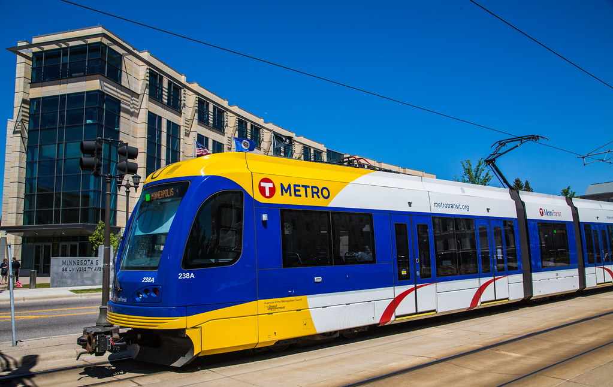
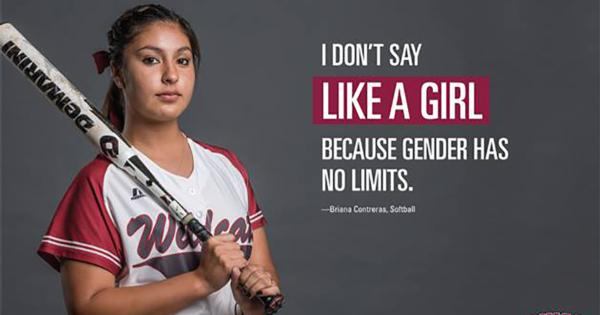
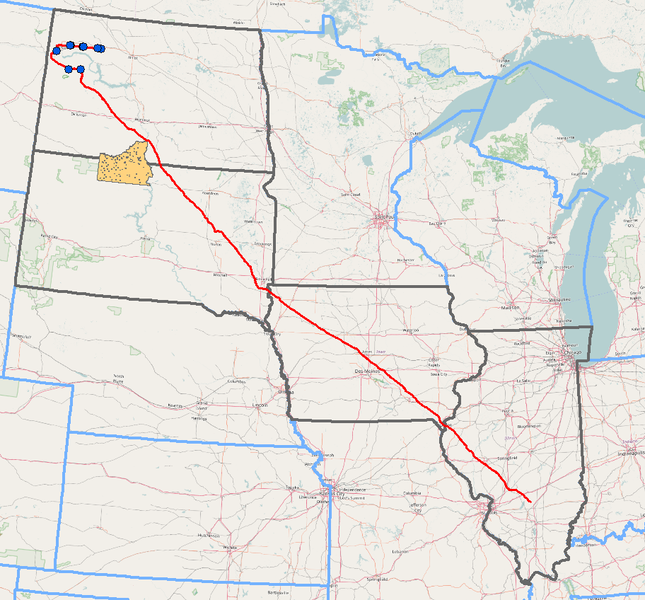

Metro Transit Blue Line Light Rail (BLRT) Extension Magazine Article
Female Athletes Don't Throw Like Girls
Dakota Access Pipeline DAPL Environmental Report
Senior Capstone Project Relfection

Looking back at my experiences as a technical writing and communication major, I've had the opportunity to flex my writing muscles in multiple genres and media. This portfolio exemplifies some of my favorite projects and revised works along with a reflection of my experience in the technical writing and communication program.